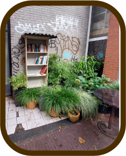

Omschrijving
In Amsterdam zijn er veel initiatieven om de stad een stuk duurzamer te maken. Toch sprak er ééntje mij echt aan, en dat was het groene buurt initiatief. Door meer met planten te doen gaan we de klimaatverandering tegen. Daarnaast heeft het ook nog de bonus dat planten natuurlijk mooi als decoratie staan en we hierdoor een mindere saaie grijze stad hebben.
